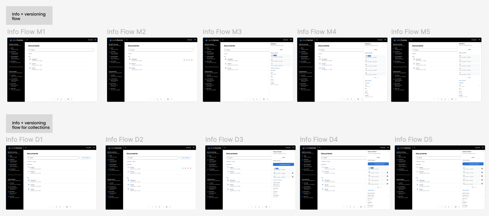

01 — Overview
At a glance
My Role
Sole UX Designer — end-to-end design for Documents feature
Context
Internship at NearlyHuman
Collaborators
Engineers, product stakeholders, fellow interns
Tool
Figma (within existing design system)
NearlyHuman builds tools that let companies train and manage their own Large Language Models. During my internship I owned the design of a new Documents feature — a system for uploading, organizing, and versioning the files that feed those models. The challenge wasn't just making it functional. It was making it work for two very different types of users at the same time.
02 — The Problem
Two users. One system. Completely different needs.
The core tension in this project was that the Documents feature had to serve two user types with fundamentally different mental models and risk tolerances:
Non-technical — don't think in files and versions
Care about organization and clarity
High risk of accidental destructive actions
Need confidence, not control
Technical — think in versions, states, and logs
Care about precision and visibility
Need to debug, iterate, and track changes
Need control, not simplification
A single undifferentiated interface would either overwhelm managers or handicap developers. My job was to design one coherent system that could serve both — without creating two completely separate products.
Specific pain points to solve
- Users couldn't tell which documents were actively being used to train their model vs. which were stored but inactive
- The relationship between files, collections, and versions was unclear — users didn't have a mental model for how they connected
- Making changes to documents felt risky — there was no clear safety net or undo path, so users avoided making updates at all
03 — Design Process
Starting with structure before visuals
Low-Fidelity Wireframes
Before touching Figma components I started with low-fidelity wireframes to work through the structural questions. At this stage I wasn't designing — I was thinking. The key questions I needed to answer first:
- What is the primary organizing principle of the page — collections or files?
- Where do unassigned files live, and how do users understand they're unassigned?
- What actions need to be immediately visible vs. tucked into menus?
- How do versions surface without overwhelming the default view?
Low-fidelity also gave me a fast feedback loop with the engineering team. Showing rough wireframes early meant structural changes happened in minutes on paper rather than hours in Figma.


Low-fidelity wireframes — structure and layout exploration
Skipping Mid-Fidelity
I moved directly from low-fidelity to high-fidelity rather than producing mid-fidelity wireframes. NearlyHuman already had an established design system with defined components, spacing tokens, and interaction patterns. Working within those constraints from the start meant the high-fidelity designs were closer to production-ready and feedback from engineers was more useful — they could evaluate real implementation complexity rather than guessing from grayscale mockups.
High-Fidelity Iteration
I went through multiple rounds of high-fidelity design, each one tightening a different layer. Early rounds focused on information hierarchy and layout. Later rounds refined action placement, edge cases, and the distinction between collection and file states.


High-fidelity iteration — early rounds
04 — Information Architecture
Giving users a clear mental model
One of the first structural decisions I had to make was how to organize the page itself. Users were confused about the relationship between files and collections — they didn't know what was grouped, what wasn't, or why it mattered for training.
My solution was to make the hierarchy explicit rather than implied:
Collections
Grouped sets of training documents. Clearly labeled as active or inactive in relation to model training. Users can see at a glance what's feeding the model.
Files
Individual documents — both assigned to collections and unassigned. Unassigned files have a distinct visual treatment so they're never confused for active training data.
This separation resolved the core mental model problem. Users could now answer "what is my model being trained on right now?" without needing to understand the underlying data architecture.
Key design decisions
Explicit active/inactive indicators on every document
Users were making changes without knowing whether those changes were affecting live model training. Adding a clear active state indicator meant every action felt intentional rather than risky.
Version history surfaced in context, not buried in settings
Developers needed to compare versions and roll back changes as part of their regular workflow — not as an emergency recovery action. Keeping version history one click away made iteration feel safe.
Unassigned files visually separated from collections
Stakeholder feedback revealed users were confusing uploaded-but-unassigned files with active training data. Visual separation eliminated that ambiguity entirely.
05 — Manager & Developer Views
One system, two lenses
Rather than building two separate products, I designed a single underlying system with two view modes. The data and architecture are identical — what changes is which information is surfaced, how actions are labeled, and how much technical detail is exposed.
Manager View
The manager view prioritizes confidence and clarity. Destructive actions are either hidden or require an additional confirmation step. Terminology is plain language rather than technical. The focus is on "what is my model using?" rather than "what is the state of each document version?"
Manager view — simplified, confidence-focused interface
Developer View
The developer view exposes the full system. Version history, active/inactive states, document metadata, and technical identifiers are all visible. Actions are labeled with technical precision. The assumption is that developers want full visibility and can handle the complexity — hiding information from them creates more problems than it solves.
Developer view — full visibility and technical control
06 — Collaboration
Designing inside a real product team
This was my first experience designing within a real engineering-led product team, and the collaboration dynamic shaped the work significantly. A few things I learned to do differently as a result:
Sharing wireframes before high-fidelity saved significant rework
Early reviews with engineers caught technically infeasible patterns before I'd invested time building them out. One version history pattern I'd designed would have required significant backend work — catching it at wireframe stage meant a 10-minute conversation instead of a redesign.
Framing decisions in user terms, not design terms
I learned quickly that "this pattern follows better visual hierarchy" didn't land with non-designers. "This change means managers won't accidentally delete active training data" did. Same decision, different framing.
Maintaining design consistency across parallel workstreams
Other interns were designing different features simultaneously. I contributed to shared component documentation so patterns I developed for Documents could be reused without creating inconsistency across the product.
07 — Final Design
The finished system
The final design delivered a complete documents management experience — upload, organize, version, and monitor — that works for both user types without compromising either.

- Clear mental model: Users immediately understand the collection/file hierarchy and what is or isn't actively training their model
- Safe by default: Managers can't accidentally take destructive actions — the interface prevents it rather than relying on them to be careful
- Full control for developers: Version history, active states, and technical metadata are always one click away rather than buried in settings
- Scalable patterns: The design system patterns established here were documented for reuse across other features in the product
What I'd do differently
The biggest gap in this project was that I didn't get to do formal usability testing with real users before the designs were handed to engineering. Feedback came from stakeholders and engineers — both valuable, but neither is a substitute for watching an actual manager try to figure out where their unassigned files went.
If I had the chance to iterate further, I'd run at least one round of testing with a non-technical manager and use that to validate whether the active/inactive indicators were actually being understood the way I intended them to be.
09 — Next Steps
Where this goes further
Usability testing
Test with real managers to validate whether the mental model is landing as intended.
Version comparison
A side-by-side diff view so developers can see exactly what changed between versions.
Bulk actions
Power users managing large document libraries need to assign, move, and delete in batches.
Filtering & tagging
Advanced filtering by status, date, and custom tags for teams with hundreds of documents.